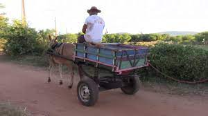
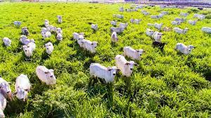

Nossa História
Nosso açougue começou em uma pequena mercearia de família no bairro Amizade. Era algo simples, sem muito charme, mas sempre com o pensamento de evoluir com humildade e honestidade.
Início
No começo, nossas carnes vinham da fazenda de nossa família, localizada no bairro Três Rios do Norte, e era transportada pela carroça da fazenda em collers cheios de gelo até a nossa pequena mercearia. Nossa loja mal se auto sustentava, muitas vezes, acabavamos o mês no vermelho, mas nunca desistimos do nosso sonho.

Um tempo depois...
Depois de um tempo, nosso comércio começou a crescer, expandimos a nossa produção, comprando alguns lotes em cidades próximas, como Corupá e Schroeder, pois as terras dessas cidades são mais baratas se comparadas com as nossas de Jaraguá. Também compramos a mercearia que nos estabeleciamos, que na época era alugada, o que já nos poupava de uma despesa considerável. Após a compra do estabelecimento, fizemos alguns investimentos no local, compramos alguns ares-condicionados, pintamos as paredes e as telhas, investimos em painéis solares, o que gerou mais uma grande economia.

Atualmente
Hoje em dia, somos um dos maiores açougues da região, fechamos parecerias com restaurantes e churrascarias, abrimos 5 novos açougues na cidade, temos mais de 10 fazendas em toda a região, enfim, hoje em dia, podemos dizer que, o sonho da nossa família foi realizado.
